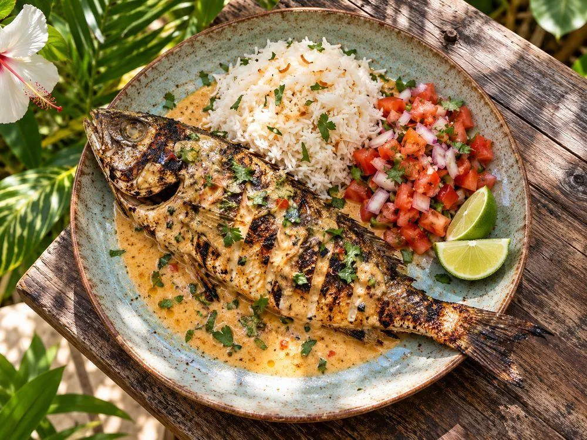
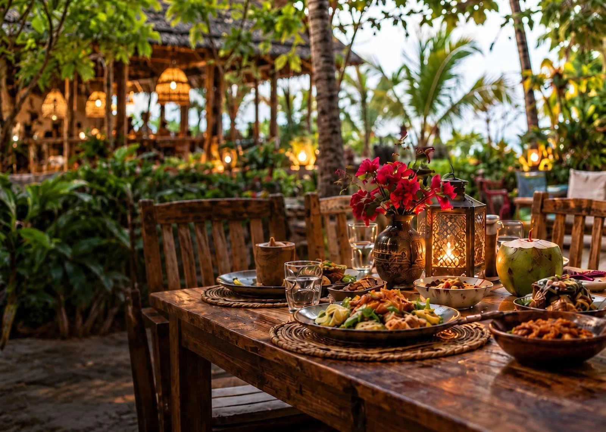
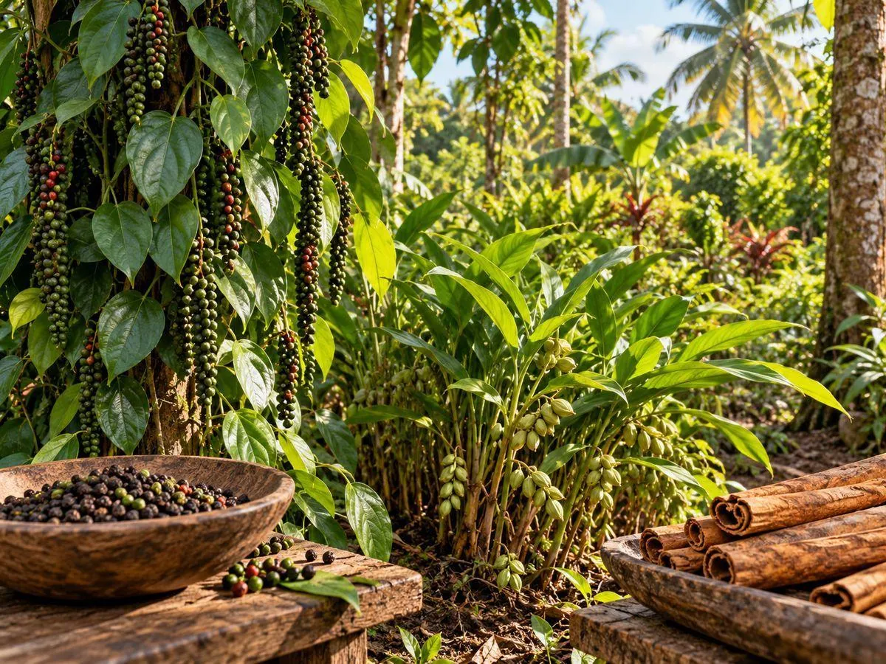
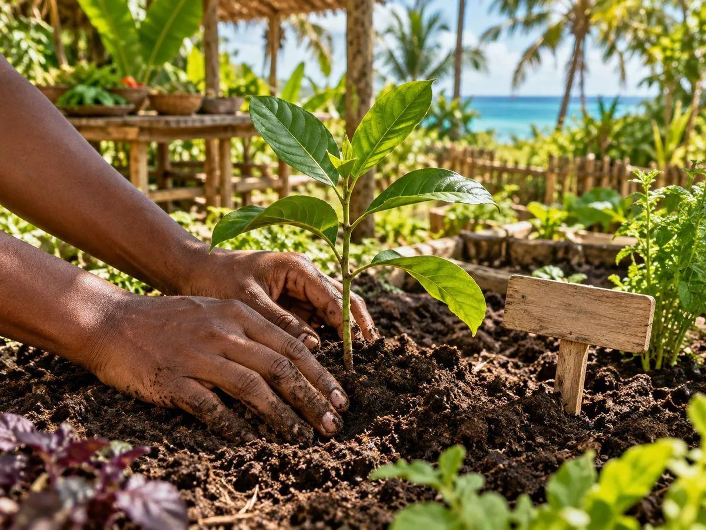
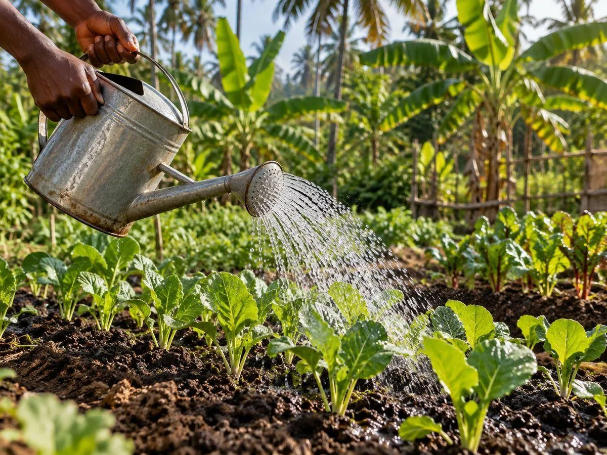
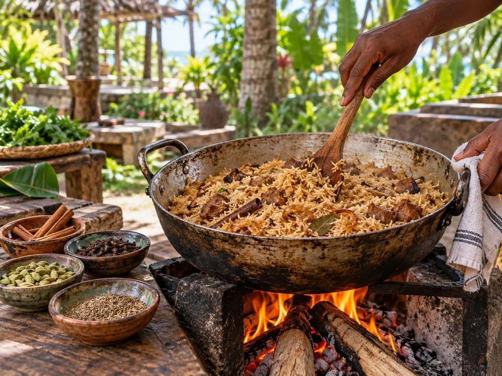

Swahili flavours
Our restaurant celebrates Swahili food. Ask the team for the current menu, dish details and options for your group.
Swahili flavours. Garden dining.
Meaningful experiences.

Illustrative imagery
Spice Farm→
Plant Your Zanzibar Memory→
Organic Farming Volunteers→
Swahili Cooking Class→Concept imagery
Choose and buy a plant or tree to be planted at Paje Farm Houses. The plant belongs to you, giving you a living connection to the island long after your holiday.
Plant selection, purchase price and care-plan terms are confirmed with the team.
Discover, cook, plant and connect in Paje.
| Experience | What you do | Price & duration | How to book |
|---|---|---|---|
| Spice farm visit | Explore spice plants with the team | Costs confirmed before your visit | Enquire → |
| Swahili cooking class | Cook pilau, samaki wa kupaka and chapati, then eat together | $30 per person · 2 hours | Enquire → |
| Plant Your Zanzibar Memory | Choose, buy and plant your own tree; follow photo updates from home | Plant and care prices confirmed by the team | Ask → |
| Organic farming volunteering | Planting, watering and organic growing with the farm team | Dates and terms agreed; an enquiry is not a placement | Express interest → |
Explore the spice farm at Paje Farm Houses and discover the plants behind the flavours. Pair your visit with a Swahili restaurant experience.
Ask the team about current spice plants, visit arrangements and availability.
Explore →Interested in hands-on organic farming? Express your interest in contributing your time, learning about our growing practices and connecting with the land.
Activities, dates, duration and participation requirements are agreed with the team. Any meals or accommodation arrangements are confirmed separately.
Get involved →Learn to cook Swahili food with our team — pilau, samaki wa kupaka, chapati and fresh island flavours. Cook together, eat together, and leave with recipes to try at home.
2-hour class · $30 per person. Times and group sizes are confirmed with the team.
Enquire →Photography is illustrative. Visit arrangements and programme details are confirmed with the team.
Have a business idea?Become a Vendor →A preview of the owner experience. This sample is not a live plant record.
Your planting photo and date will appear here when records are connected.

Follow dated photos and care notes from home. Live updates are not connected in this preview.
Prepare a restaurant reservation enquiry, ask about planting or a spice farm visit, enquire about volunteering, or request an update about your plant.
This form prepares a message to copy. It does not send a booking or take payment.
Rent a space and provide your services at Paje Farm Houses. We welcome complementary concepts that add to the food, nature and visitor experience.
Become a Vendor ↗Expressions of interest are open. The ideas below are suggested business concepts, not a list of confirmed units or existing tenants. Space availability, suitability, rent and terms are discussed with the team.
Have a different idea? Choose “Other concept” in your enquiry. Concepts are reviewed for their fit with the destination and the services already offered.
Tell us about your business, products or services, experience, preferred start date and space requirements.
Review suitable space with the team. Discuss your layout, customer experience, utilities, access and the equipment you need.
Confirm rent, deposit, lease duration, fit-out, permitted use, operating arrangements and responsibilities in writing.
Once agreed, arrange your setup and opening with the team. Coordinate signage, service standards and how visitors discover your business.
Propose and operate your own business, bring the agreed equipment and stock, and manage your service delivery. Staffing, fit-out, maintenance and any required approvals are clarified before you commit.
Space size and location; water, electricity and waste arrangements; opening hours; customer access; signage; cleaning; marketing; and any shared facilities. Included services and costs are confirmed individually.
No rent, earnings, footfall or exclusivity is guaranteed on this page. There is no online lease or payment. An enquiry starts a conversation; a space is confirmed only after terms are agreed.
Alongside the restaurant and planting programme, accommodation and independent vendor opportunities remain part of Paje Farm Houses.
Ask about stays in our natural environment. Room types, prices and availability are confirmed directly.
Enquire about a stay ↗Interested in renting space to offer your services? Introduce your concept and tell us what facilities you need.
Introduce your business ↗Different trees, plants and organic farming practices are at the heart of the farm's environment.
Prepare your enquiry above, then share it with the team at info@pajefarmhouses.com or +255 778 621 086. A reservation is confirmed only after the team responds.
Yes. Mention nyama pori in your enquiry so the team can confirm the available meats, dishes and any relevant dietary information.
Enquire using the form. The team will confirm visit times, plants available to explore and any costs before your visit.
Select “Organic farming volunteering” and share your dates, duration, experience and interests. The team will discuss activities and arrangements. An enquiry does not confirm a placement; meals, accommodation and terms are agreed separately.
The programme is designed for you to buy and own a plant kept at Paje Farm Houses. The team will confirm plant options and ownership and care terms before purchase.
You can arrange paid maintenance and follow progress through photos and care updates. The My Plant area above shows the intended experience; live plant records are not yet connected.
Yes. You can return to water and care for your plant. Arrange access and visit details with the team.
Paje Farm Houses is a favourite garden restaurant in Paje, known for Swahili food, nyama pori and dining among the trees. It is a top spot on the East Coast of Zanzibar for local flavour in a natural setting. Reserve a table at info@pajefarmhouses.com or +255 778 621 086.
Beyond the beach, visit a spice farm, take a Swahili cooking class, join the organic farming volunteer programme and plant your own Zanzibar memory tree. Paje Farm Houses brings all of these together in one place — send your enquiry through the form above.
Email info@pajefarmhouses.com or call +255 778 621 086. The team confirms restaurant reservations, menus, planting visits, cooking classes, volunteering and stays.
The 2-hour Swahili cooking class is $30 per person. Times and group sizes are confirmed with the team — send your enquiry through the form above.
Paje Farm Houses is on Paje Road in Paje, on the East Coast of Zanzibar, Tanzania (plus code PGJC+CG). The exact location pin is shared when the team confirms your visit. Get directions ↗ · Find us on Google ↗
Paje Farm Houses combines a garden restaurant serving Swahili food and nyama pori with a spice farm, Swahili cooking classes, an organic farming volunteer programme and a plant-your-own-memory programme, all in a natural setting in Paje, East Coast Zanzibar.
Yes. Dishes such as Maharage ya Nazi na Chapati and Mboga za Kisiwani na Ndizi za Kuchoma are vegetarian. Tell the team about any dietary requirements when you enquire.
Walk-ins may be possible, but reservations are recommended so the team can confirm availability, menu and seating. Enquire via the form, email info@pajefarmhouses.com or WhatsApp +255 778 621 086.